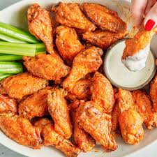

Chicken Wings !!!

Description :
Chicken wings are a popular appetizer or snack, often served fried or baked.
They can be coated in a variety of sauces, such as buffalo, barbecue, or honey garlic, and are typically served with celery sticks and dipping sauces like blue cheese or ranch.
Ingredients
- Chicken wings
- Salt
- Black pepper
- Garlic powder
- Paprika
- Flour (for coating, if frying)
- Oil (for frying, if frying)
- Buffalo sauce
- Barbecue sauce
- Honey garlic sauce
- Celery sticks
- Blue cheese or ranch dressing (for dipping)
Steps to Prepare Chicken Wings
- Preheat your oven to 400°F (200°C) or heat oil in a deep fryer to 375°F (190°C) if frying.
- Season the chicken wings with salt, black pepper, garlic powder, and paprika.
- If frying, coat the wings lightly in flour. Fry the wings in batches for about 8-10 minutes, or until golden brown and crispy. Drain on paper towels.
- If baking, place the seasoned wings on a baking sheet lined with parchment paper. Bake for 40-45 minutes, turning halfway through, until crispy and cooked through.
- In a large bowl, toss the cooked wings with your choice of sauce (buffalo, barbecue, honey garlic, etc.) until evenly coated.
- Serve the wings hot with celery sticks and a side of blue cheese or ranch dressing for dipping.